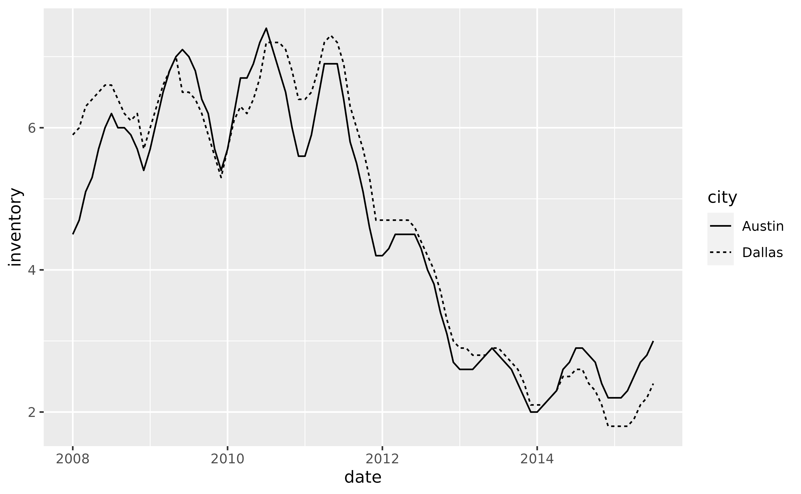
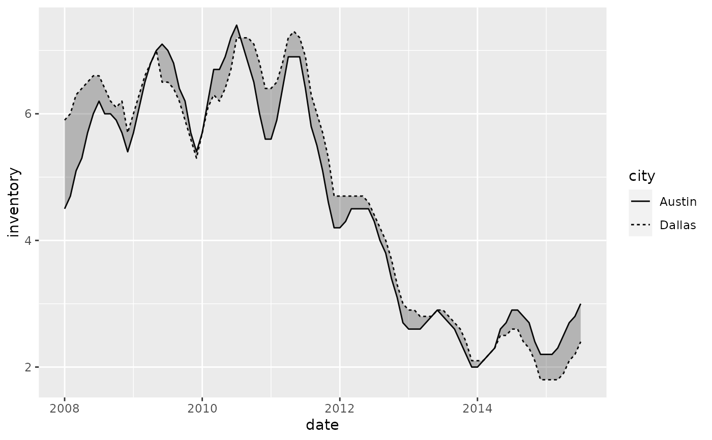
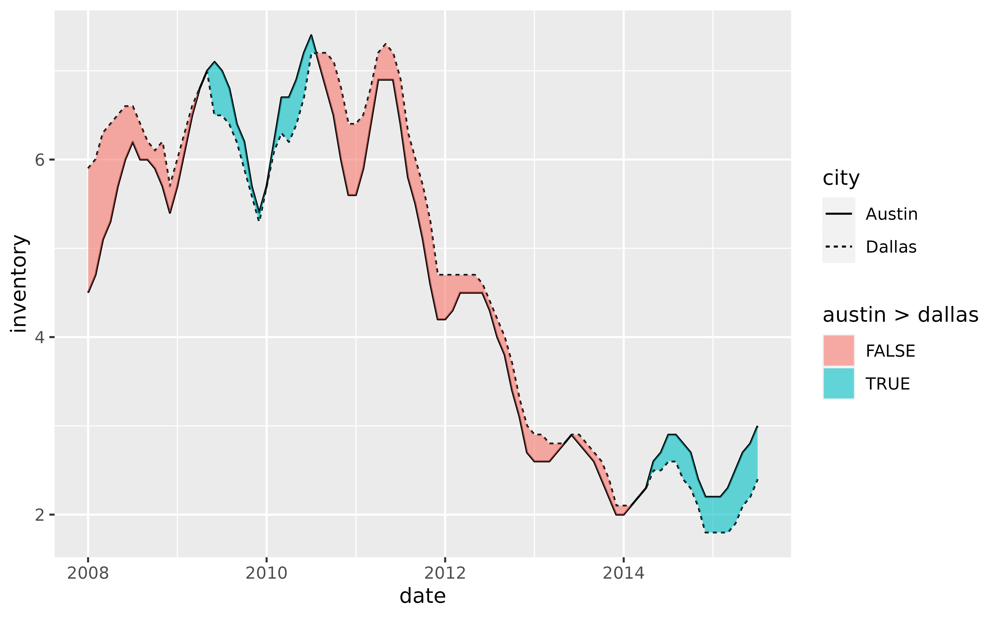
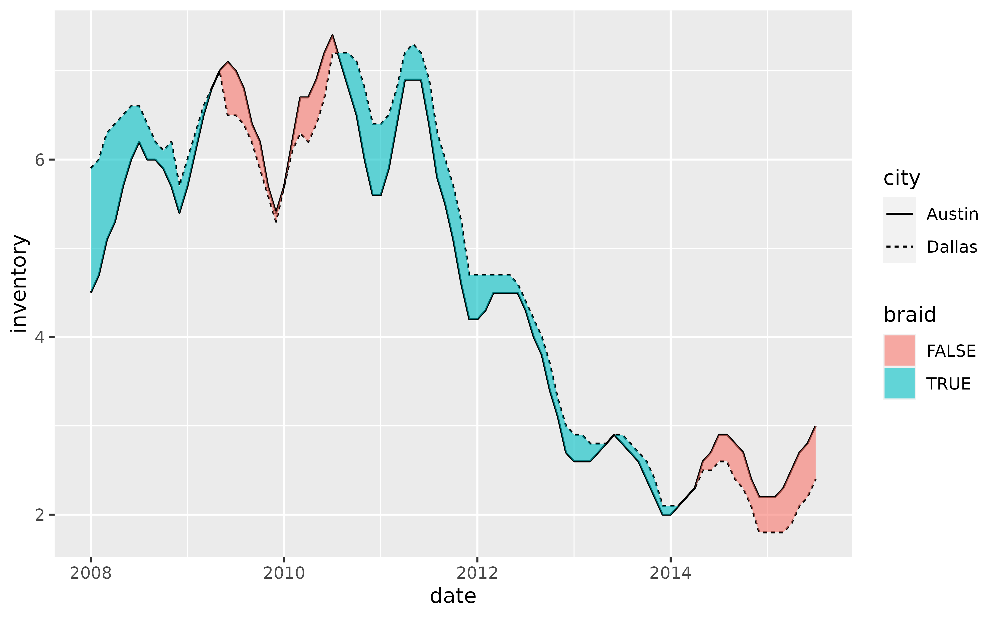
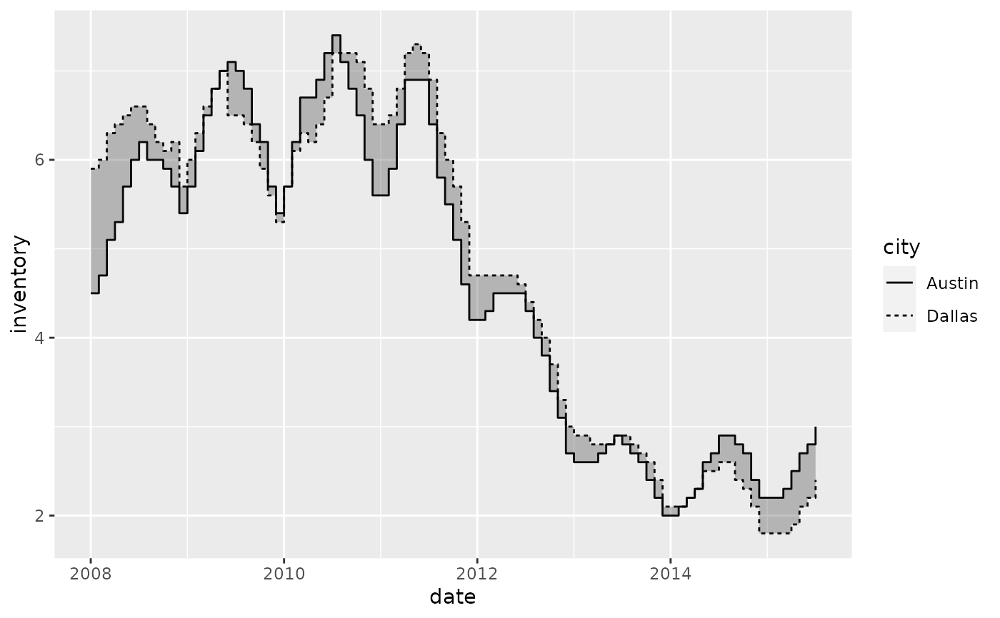
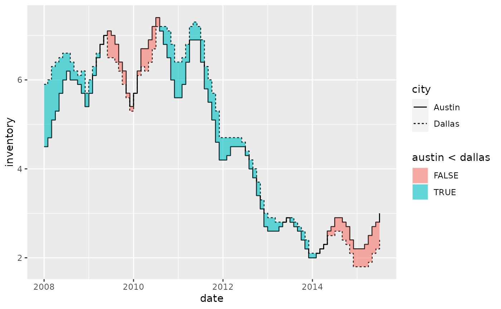
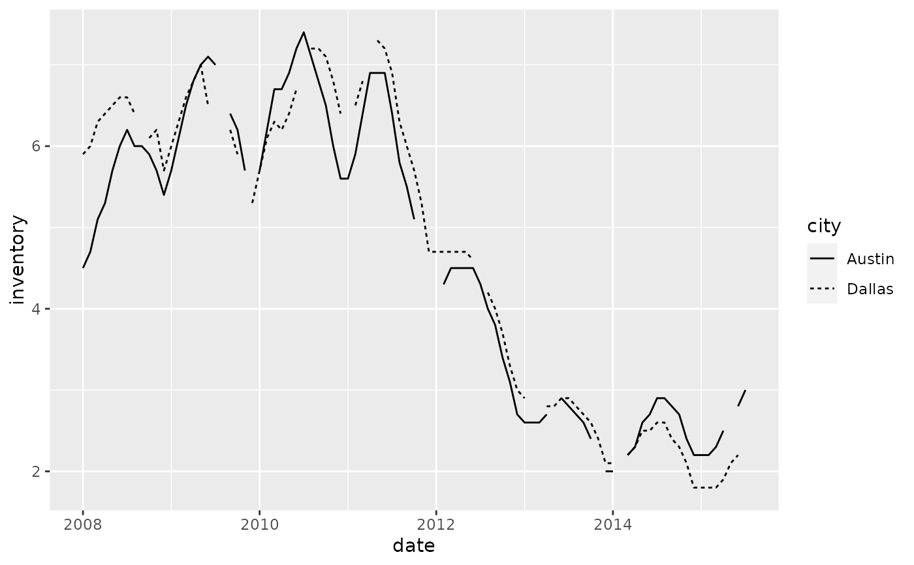
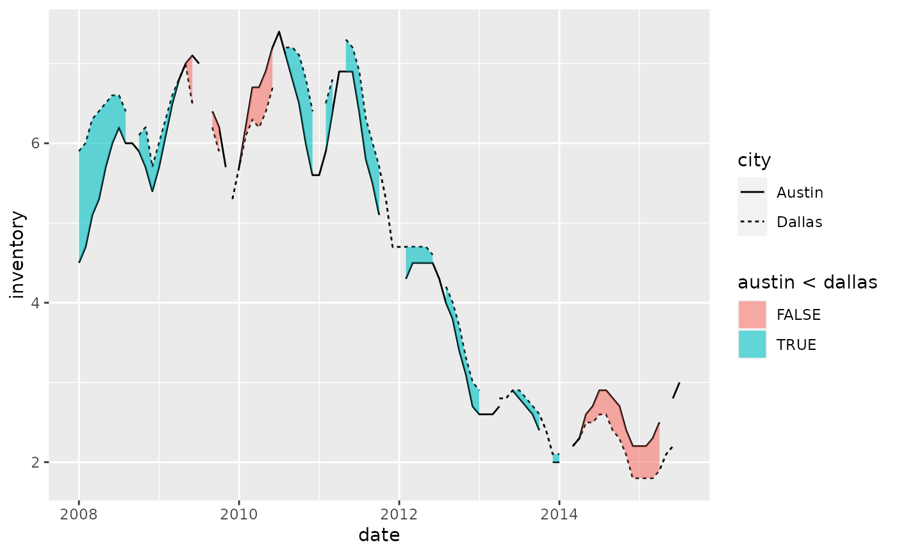
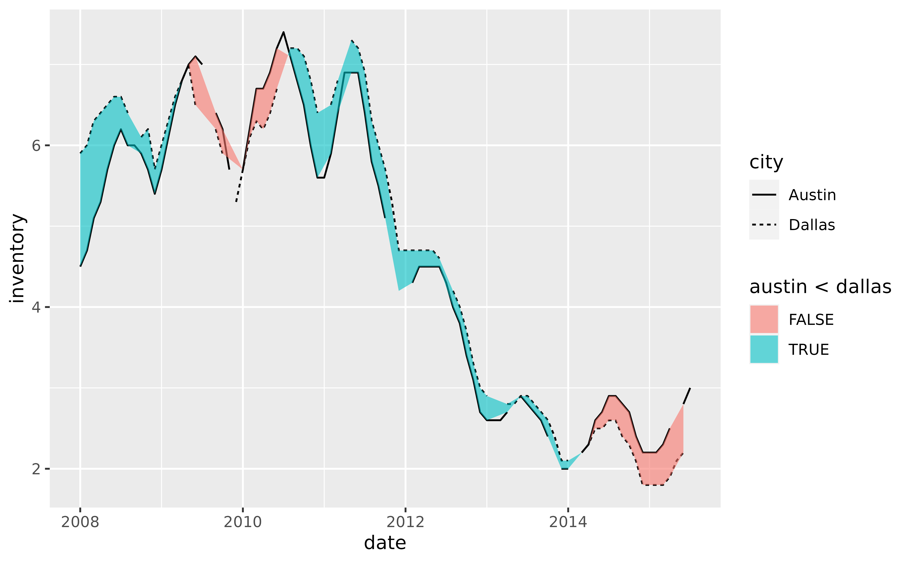

geom_braid() is an extension of geom_ribbon() that uses stat_braid()
to correctly fill the area between two alternating series (lines or steps)
with two different colors.
Usage
geom_braid(
mapping = NULL,
data = NULL,
position = "identity",
...,
method = NULL,
na.rm = NA,
show.legend = NA,
inherit.aes = TRUE
)
stat_braid(
mapping = NULL,
data = NULL,
geom = "braid",
position = "identity",
...,
method = NULL,
na.rm = NA,
show.legend = NA,
inherit.aes = TRUE
)Arguments
- mapping
Set of aesthetic mappings created by
aes()oraes_(). If specified andinherit.aes = TRUE(the default), it is combined with the default mapping at the top level of the plot. You must supplymappingif there is no plot mapping.- data
The data to be displayed in this layer. There are three options:
If
NULL, the default, the data is inherited from the plot data as specified in the call toggplot().A
data.frame, or other object, will override the plot data. All objects will be fortified to produce a data frame. Seefortify()for which variables will be created.A
functionwill be called with a single argument, the plot data. The return value must be adata.frame, and will be used as the layer data. Afunctioncan be created from aformula(e.g.~ head(.x, 10)).- position
Position adjustment, either as a string, or the result of a call to a position adjustment function.
- ...
Other arguments passed on to
layer(). These are often aesthetics, used to set an aesthetic to a fixed value, likecolour = "red"orsize = 3. They may also be parameters to the paired geom/stat.- method
Intersection and imputation method to use to braid the ribbon, accepts
NULL,"line", or"step". Formethod = NULL, the default, print a message to the console and usemethod = "line". Formethod = "line", silently braid the ribbon with two series drawn bygeom_line()orgeom_path(). Formethod = "step", silently braid the ribbon with two series drawn bygeom_step().- na.rm
If
NA, the default, missing values are imputed bymethod. IfFALSE, missing values are kept and appear as gaps in the ribbon. IfTRUE, missing values are removed.- show.legend
logical. Should this layer be included in the legends?
NA, the default, includes if any aesthetics are mapped.FALSEnever includes, andTRUEalways includes. It can also be a named logical vector to finely select the aesthetics to display.- inherit.aes
If
FALSE, overrides the default aesthetics, rather than combining with them. This is most useful for helper functions that define both data and aesthetics and shouldn't inherit behaviour from the default plot specification, e.g.borders().- geom
Override the default connection with
geom_braid().
Examples
library(ggplot2)
# To demonstrate the features of `geom_braid()` we'll use a subset of the
# `txhousing` dataset from ggplot2.
tx_long <- with(txhousing, txhousing[city %in% c("Dallas", "Austin"), ])
tx_long <- with(tx_long, tx_long[date >= 2008, ])
tx_long <- subset(tx_long, select = c(date, city, inventory))
tx_wide <- data.frame(
date = with(tx_long, date[city == "Dallas"]),
dallas = with(tx_long, inventory[city == "Dallas"]),
austin = with(tx_long, inventory[city == "Austin"])
)
tx_wide <- with(tx_wide, tx_wide[date >= 2008, ])
p <- ggplot(tx_long, aes(date))
p + geom_line(aes(y = inventory, linetype = city))

# Use `geom_braid()` to draw a ribbon between the two lines, just as we would
# with `geom_ribbon()`.
p +
geom_line(aes(y = inventory, linetype = city)) +
geom_braid(aes(ymin = austin, ymax = dallas), data = tx_wide, alpha = 0.3)
#> `geom_braid()` using method = 'line'

# Now fill the ribbon between the two series with different colors depending
# on which series is over or under the other. Do so by mapping any of the
# following to the `fill` aesthetic:
# `austin < dallas`
# `austin > dallas`
# `austin <= dallas`
# `austin >= dallas`
p +
geom_line(aes(y = inventory, linetype = city)) +
geom_braid(
aes(ymin = austin, ymax = dallas, fill = austin > dallas),
data = tx_wide,
method = "line",
alpha = 0.6
)

# Alternatively, map `after_stat(braid)` to `fill` which will apply
# `ymin < ymax` by default, in this case `austin < dallas`
p +
geom_line(aes(y = inventory, linetype = city)) +
geom_braid(
aes(ymin = austin, ymax = dallas, fill = after_stat(braid)),
data = tx_wide,
method = "line",
alpha = 0.6
)

# To braid a ribbon with two series drawn with `geom_step()`, use
# `method = "step"` in `geom_braid()`.
p +
geom_step(aes(y = inventory, linetype = city)) +
geom_braid(
aes(ymin = austin, ymax = dallas),
data = tx_wide,
method = "step",
alpha = 0.3
)

p +
geom_step(aes(y = inventory, linetype = city)) +
geom_braid(
aes(ymin = austin, ymax = dallas, fill = austin < dallas),
data = tx_wide,
method = "step",
alpha = 0.6
)

# How does `geom_braid()` handle missing values? Let's replace some existing
# values with `NA`s to demonstrate.
set.seed(42) # for reproducibility
tx_long[sample(1:nrow(tx_long), 20), "inventory"] <- NA
tx_wide <- transform(tx_wide,
dallas = with(tx_long, inventory[city == "Dallas"]),
austin = with(tx_long, inventory[city == "Austin"])
)
p <- ggplot(tx_long, aes(date))
p + geom_line(aes(y = inventory, linetype = city), na.rm = TRUE)

# If `na.rm = NA`, the default, `geom_braid()` imputes missing values that
# occur between observations in a series.
p +
geom_line(aes(y = inventory, linetype = city), na.rm = TRUE) +
geom_braid(
aes(ymin = austin, ymax = dallas, fill = austin < dallas),
data = tx_wide,
method = "line",
alpha = 0.6
)
# If `na.rm = FALSE`, `geom_braid()` keeps the missing values and portrays
# them as gaps in the ribbon.
p +
geom_line(aes(y = inventory, linetype = city), na.rm = TRUE) +
geom_braid(
aes(ymin = austin, ymax = dallas, fill = austin < dallas),
data = tx_wide,
method = "line",
alpha = 0.6,
na.rm = FALSE
)

# If `na.rm = TRUE`, `geom_braid()` removes the missing values. However,
# because this removes rows in `tx_wide` where only one of `austin` and
# `dallas` may be missing, the resulting ribbon will likely not match the
# lines drawn with `geom_line()` using `tx_long`.
p +
geom_line(aes(y = inventory, linetype = city), na.rm = TRUE) +
geom_braid(
aes(ymin = austin, ymax = dallas, fill = austin < dallas),
data = tx_wide,
method = "line",
alpha = 0.6,
na.rm = TRUE
)

# Happy braiding!